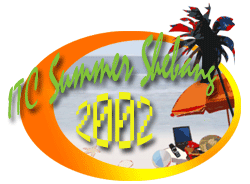

| ITC
Annual Summer Outing 2002 : El Caseron Caba,
La Union
A
Blissful Day Under the Sun
by: Florinda D. Tamonan
Early
morning at ITC, 26th of April, everyone as usual does the
typical work, busy coping up with deliverables and deadlines.
About 7pm, everyone seems to have packed-up their things.
Some went out to dine, some went out to do the last minute
shopping, some took a nap and some simply waited for the time,
time to leave
the office and take a two-day holiday out in the sun. It's
summer and each one's raring to go out of town. Take a couple
of days stay at La Union, El Caseron.
Approximately
9:30 in the evening, two L300 canter-type vehicles, estimated
to carry 30 passengers, were outside the parking area. At
first, it seems like it would accommodate 30-35 passengers,
but when everybody, 32 in all, including travel bags, were
already inside, alas, it became jam-packed. It's funny because,
though nobody could move as comfortably as possible, none
seems to be uneasy about it. In the air, there was laughter,
teasing, and a continuity of discourse.
The
night was deep and almost everyone was heavy-eyed. The calmness
and stillness of the hour was an invitation for good sleep.
After long hours of travel, these were the words you can hear,
"at last", "hay", "finally",
coz after having traveled maybe 5-6 hours, finally we reached
El Caseron resort, a couple of hours before daybreak. At that
time, we mostly desired of laying our back on the bed to have
a comfortable sleep. The main house has 5 family-size rooms
and two cottages by the seaside. Each room was fully air-conditioned
except for one room in one of the cottages which instead of
being air-conditioned was air-continuous.
The
few hours after, as you peep through the window, the inviting
waves of the sea glittered from the crystal rays of daylight
and its subtle cool breeze lets you experience an inimitable
rapture. It was indeed surprising to see the house conceptualized
in old-fashioned paintings and interior decoration. It was ideal
for group get-together, there were picnic grounds near the shore,
playing area for volleyball, badminton and table tennis, a room
for billiards and Videoke, a swimming
pool which was being
cleaned and
replenished
with water
and a
lot of space for recreational activities.
| See
the ITC Summer Outing pictures here! |
|
After waking from slumber, it was breakfast time, the smell
of hot coffee and traditional meal of tapa, bangus, tocino,
longanisa was enticing. Some woke up late, some were already
on the beach, some were already playing volleyball, some on
the pool and some were watching a movie.
At
daytime, most of the boys had fun with the waves, they swam,
they played, and they would carry every single woman to throw
on the beach. The beach was clean but the shoreline was rocky,
making it difficult for kids to swim. It would require you
to go a depth before you could pass the part where there were
lots of stones. That is why, majority of ladies preferred
to play in the swimming pool. On the pool, everyone was having
fun but what's really amazing is the joy captured on the faces
of children playing on a 2-3 feet high swimming pool. The
delight on their eyes exhibits their appreciation of being
able to swim without apprehension. They swam like they'd never
get tired. They played as if the day would not end. They ran
like babes and hunks in Baywatch not even minding the heat
of the sun and most of all, they would always end up embracing
their parents with tender-loving hugs while in the pool. And
that day, you would hear the finest sound of all… children's
laughter.
Better
yet, even adults revert to their childish ways. When the swimming
pool was quarter full, they found pleasure tossing volleyball
and playing team badminton with their faces painted with smiles.
Hungry
and exhausted, it was the best time to have the lunch ready.
Freshly boiled eggplant with shrimp paste, grilled liempo
and soup were served hot. After enjoying the meal,
as usual, it was time to go back and challenge the day. Some
played billiards, some sang songs but for some it was an opportunity
for rest. During
the night, it was overwhelming to see boys having their manly
talks, heart-to-heart talks maybe, others were busy engaging
in a game of charade while a few decided to watch and have
a movie marathon. For those with families, it was family time.
Some who were dead tired preferred to sleep early.
that
day, you would hear the finest
sound of all… children's laughter.
|
|
The
next morning, each one made use of every hour left because
the group needed to leave the place after lunch. Everything
that made them enjoy the previous day, and those they haven't
done, they coped by doing these in the early morning. An hour
after lunch, everybody was ready.
Some
said it could have been better if it was extended. Some said
it was pretty great especially when you were spending time
with the people you know. Some said it was comfortable. Some
said though there has been not much of an activity, the door
for relaxation was open. Some said the place was beautiful
except, of course, the rocky seashore. Some were already contented
in the thought that it would be a day out with your colleagues,
some said it was time well spent with their families. But
I guess what counted most was the bonding, being able to know
your second family, as we may say, with their ways and habits.
The place was wonderful and the weather was perfect. It was
a blissful day under the sun, out of air pollution, out of
stress and out of days' work. And how more fulfilling it would
feel, if everybody were there to spend time with the rest.
Overall,
everyone enjoyed this blissful day under the sun. |